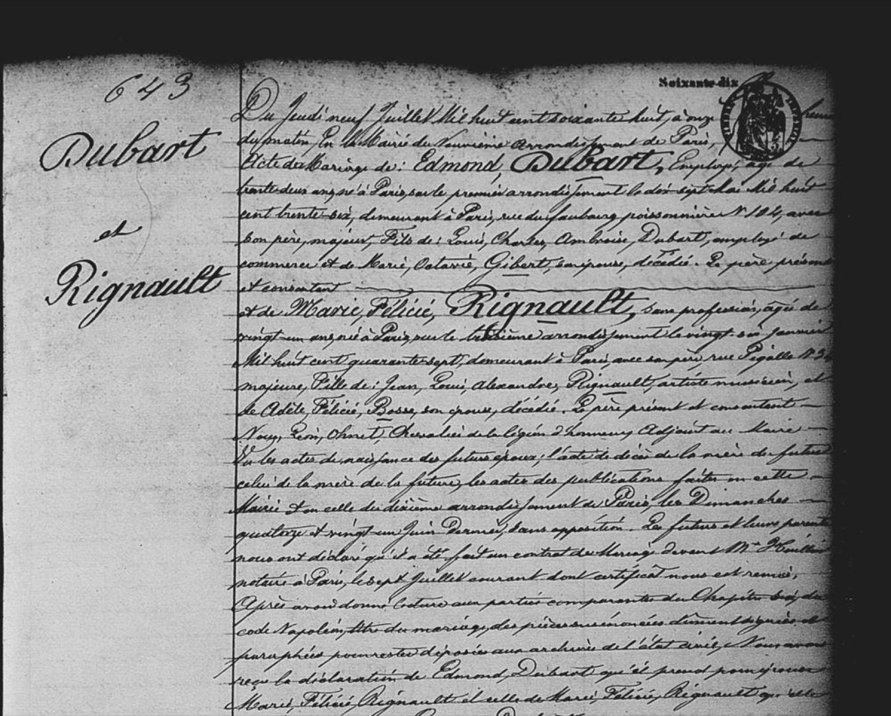

Acte d'état civil · 9 juillet 1868
Mariage Edmond Dubart × Marie Félicie Rignault, Paris 9e, acte n° 643 du 9/07/1868
Ce document établit
- Le 9 juillet 1868, à la mairie du 9e, Edmond Dubart, employé, 32 ans, né Paris 1er le 17/05/1836, demeurant 104 rue du Faubourg-Poissonnière avec son père, épouse Marie Félicie Rignault, 21 ans, née Paris 3e en janvier 1847, demeurant rue Pigalle 34 avec son père Jean Louis Alexandre Rignault, artiste musicien (mère Adèle Félicie Bosse, décédée) ; contrat devant Me Huillier (lecture corrigée le 03/11/2026, A0548) le 7/07/1868 ; témoins : Joseph Éléonor Pressat [?], docteur en médecine ; Pierre Valton, ancien avocat au Conseil d'État ; Philippe Hébert, agent de change ; Pierre Hubert Cary, négociant vérifié A0258
« « acte de mariage de : Edmond Dubart, employé, âgé de trente deux ans … et de Marie Félicie Rignault, sans profession, âgée de vingt un ans » » (lecture incertaine : Pressat)
- En juillet 1868, Louis Charles Ambroise Dubart, employé de commerce, veuf, demeure 104 rue du Faubourg-Poissonnière avec son fils Edmond ; il assiste au mariage de celui-ci, consent et signe « L. Dubart » vérifié A0259
« « demeurant à Paris, rue du faubourg Poissonnière n° 104, avec son père … fils de Louis Charles Ambroise Dubart, employé de commerce … le père présent et consentant » ; signature « L. Dubart » »
- Dans la table des hypothèques (reliée vers 1875), Camille Melchior Gibert est domicilié 104 faubourg Poissonnière, l'adresse où Louis Dubart, son beau-frère, est domicilié en 1869-1871 et à sa mort : Louis a probablement vécu ses dernières années dans l'immeuble de sa sœur et de son beau-frère non résolu A0250
« Louis demeure au 104 faubourg Poissonnière dès juillet 1868 »
- Edmond Dubart, « petit gendre » de Marie Joséphine Gindre, est l'époux de sa petite-fille Marie Félicie Rignault (mariage du 09/07/1868), fille de Jean Louis Alexandre Rignault et d'Adèle Félicie Bosse, elle-même fille de Marie Joséphine Gindre. vérifié A0318
- Le contrat de mariage d'Edmond Dubart et de Marie Félicie Rignault est reçu le 7/07/1868 par Me Paul Huillier (étude VI) : répertoire n° 452, en minute, « Dubart (entre M. Edmond) dt 104 rue du faubourg Poissonnière à Paris et Mlle Marie Félicie Rignault dt 34 rue Pigalle », enregistré le 8 juillet (droits 487,60 F) ; minute MC/ET/VI/1220, non numérisée. L'acte de mariage porte « Me Huillier » (lecture antérieure « Mouillin [?] » erronée) vérifié A0548
« « un contrat de mariage devant Me Huillier, notaire à Paris, le sept juillet courant » »
- Mariage du 9 juillet 1868 : les quatre témoins sont Joseph Éléonor Pressat [?], docteur en médecine, chevalier de la Légion d'honneur, 60 ans, 13 rue Richepance ; Pierre Valton, ancien avocat au Conseil d'État, 72 ans, 13 rue Saint-Florentin ; Philippe Hébert, agent de change, 40 ans, rue Bertin [?] 4 [?] ; Pierre Hubert Cary, négociant, 62 ans, 7 rue du Grand-Chantier partiellement vérifié A0737
« Joseph Éléonor Pressat [?], docteur en médecine […] rue Richepance n° 13 ; Pierre Valton, ancien avocat au Conseil d'État, âgé de soixante douze ans […] rue St-Florentin n° 13 ; Philippe Hébert, agent de change, âgé de quarante ans […] ; Pierre Hubert Cary, négociant, âgé de soixante deux ans […] rue du Grand-Chantier n° 7 » (lecture incertaine : oui)
- Hypothèse : le M. Valton, ancien avocat au Conseil d'État, de Boulogne-sur-Seine (1853-1855) pourrait être Pierre Valton, 72 ans en 1868, témoin du mariage d'Edmond ; aucun lien avec les Dubart ni les Rignault n'en découle non vérifié A0739
« Pierre Valton, ancien avocat au Conseil d'État, âgé de soixante douze ans » (lecture incertaine : oui)
- Mariage du 26 juillet 1860 de Charles Alfred Dubart, employé : ses quatre témoins sont Jean-Baptiste Joly [?], docteur en médecine, 63 ans ; Alphonse Charles Courtois, négociant, 35 ans ; Édouard Marc André Tissot, employé, 31 ans (qui porte le nom de la mariée) ; Henri Germain Renesson [?], employé, 31 ans ; aucun d'eux n'est témoin du mariage d'Edmond en 1868 et aucun n'est dit travailler dans la finance partiellement vérifié A0740
« témoins de 1868 : Pressat, Valton, Hébert, Cary » (lecture incertaine : oui)
- Aucun lien documenté n'a été trouvé entre les témoins de 1868 (Pressat, Valton, Hébert, Cary) et les Dubart-Gibert ou les Rignault : base Léonore non interrogeable (application web), recherche plein texte Internet Archive sans résultat exploitable pour Pressat (rue Richepance), Valton (rue Saint-Florentin) ni Cary (rue du Grand-Chantier) recherche infructueuse A0741
« les quatre témoins de 1868 » (lecture incertaine : oui)
Transcription
recherches/generation-4/dubart-gibert/transcriptions.md (G20)
Lire la transcription intégrale : Transcriptions — Louis Charles Ambroise DUBART (Sosa 8) →